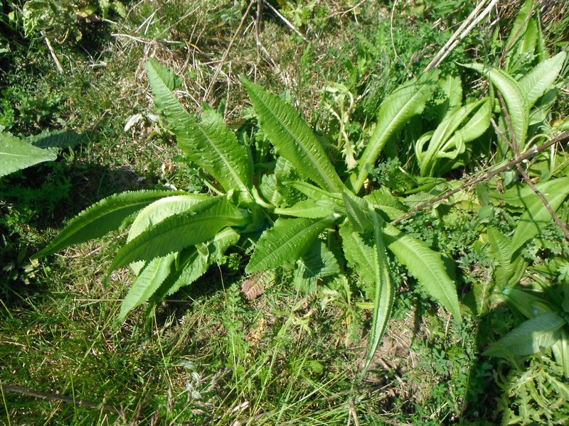
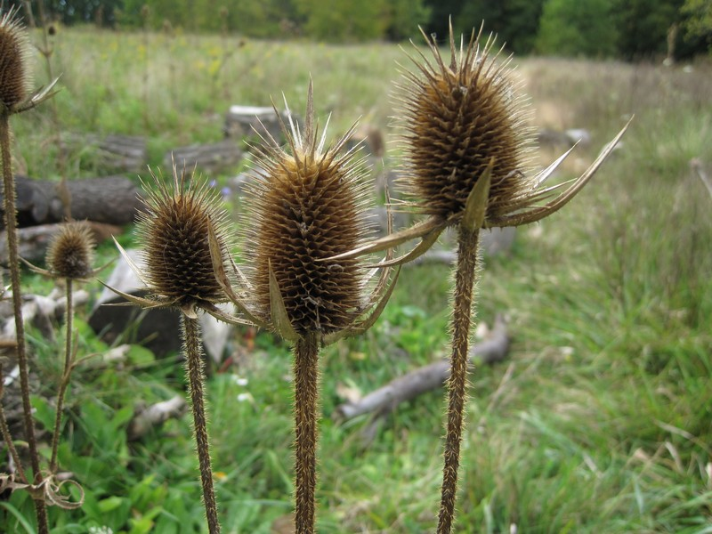
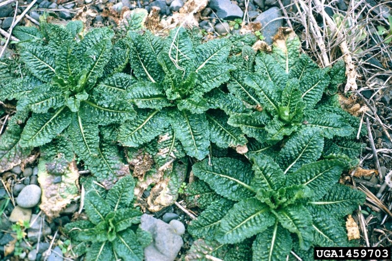
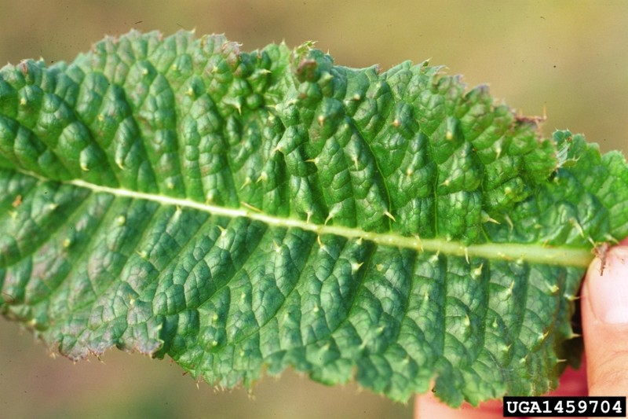

photo: Cleveland Metroparks
Common Teasel (Dipsacus fullonum)
Cleveland Metroparks |
Cleveland Metroparks |
Steve Dewey, Utah State University, Bugwood.org |
Steve Dewey, Utah State University, Bugwood.org |
{kind=link}
{kind=link}
{kind=link}
{kind=link}
Form:
Herbaceous, monocarpic perennial. Grows as a basal rosette for at least one year. Forms a prickly, angled flowering stalk, 2-6' tall, typically in second or third year.
Leaves:
Opposite, large (up to 1.5' long), oblong, and prickly. Leaves of flowering plants join into cup around stem. Common teasel's leaves are not lobed. Leaves of cut-leaved teasel are broader and have deep, feathering lobes.
Flowers:
Hundreds of small flowers clustered in dense, egg-shaped heads. Stiff, spiny, leaf-like bracts curve up from base of flower head. Common teasel has purple flowers and bracts longer that flower head. Cut-leaved teasel has white flowers and bracts shorter than flower heads. Both species bloom in summer.
Fruits & Seeds:
Each plant can produce as many as 2,000 seeds. Seeds remain viable in the soil for at least two years.
Roots:
Deep taproot, up to 2' long and 1" in diameter.
Tier 4 - Widespread and Abundant
These are known problem species throughout Cleveland Metroparks and are currently under active management. Management plans are set using population extent and site-specific information.
Action: These plants should be recored as present or absent. These species are known to be widespread and abundant throughout Cleveland Metroparks.